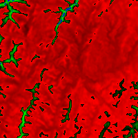

名前
ST_MapAlgebraFct — 1バンド版 - 入力バンドに対する妥当なPostgreSQL関数で形成された、指定したピクセルタイプの1バンドのラスタを生成します。バンドを指定しない場合は1番と仮定します。
概要
raster ST_MapAlgebraFct(raster rast, regprocedure onerasteruserfunc);
raster ST_MapAlgebraFct(raster rast, regprocedure onerasteruserfunc, text[] VARIADIC args);
raster ST_MapAlgebraFct(raster rast, text pixeltype, regprocedure onerasteruserfunc);
raster ST_MapAlgebraFct(raster rast, text pixeltype, regprocedure onerasteruserfunc, text[] VARIADIC args);
raster ST_MapAlgebraFct(raster rast, integer band, regprocedure onerasteruserfunc);
raster ST_MapAlgebraFct(raster rast, integer band, regprocedure onerasteruserfunc, text[] VARIADIC args);
raster ST_MapAlgebraFct(raster rast, integer band, text pixeltype, regprocedure onerasteruserfunc);
raster ST_MapAlgebraFct(raster rast, integer band, text pixeltype, regprocedure onerasteruserfunc, text[] VARIADIC args);
説明
入力ラスタ(rast)に対してonerasteruserfuncで指定される妥当なPostgreSQL関数で形成されラスタを返します。生成されるラスタは指定したピクセルタイプの1バンドのラスタです。bandを指定しない場合は1番と仮定します。新しいラスタは、元のラスタと同じ地理参照、幅、高さを持ちますが、1つのバンドしか持ちません。
pixeltypeが渡された場合には、新しいラスタは、指定されたピクセルタイプのバンドを持ちます。pixeltypeとしてNULLが渡された場合には、新しいラスタはrastの入力バンドと同じピクセルタイプになります。
onerasteruserfunc引数は
SQL関数またはPL/pgSQL関数のシグネチャで、regprocedureにキャストします。大変単純で本当に使えないPL/pgSQL関数の例を挙げます。
CREATE OR REPLACE FUNCTION simple_function(pixel FLOAT, pos INTEGER[], VARIADIC args TEXT[])
RETURNS FLOAT
AS $$ BEGIN
RETURN 0.0;
END; $$
LANGUAGE 'plpgsql' IMMUTABLE;
userfunctionは2または3の引数を受け付けます。すなわち、float値、任意の整数配列、VARIADIC文字列配列です。第1引数はラスタセルごとの値です(ラスタのデータ型に関係なく)。第2引数は現在の処理セルの位置で、'{x,y}'であらわされます。第3引数は、ST_MapAlgebraFctへのパラメータの残っているもの全てがuserfunctionに渡されることを示します。
regprodedure引数をSQL関数に渡す際は完全な関数シグネチャとregprocedure型へのキャストが求められます。 上のPL/pgSQL関数を引数に取るには、引数のSQLは
'simple_function(float,integer[],text[])'::regprocedure
となります。 引数は関数名、引数の型を含み、名前と引数型全体に対して引用符でくくり、regprocedureにキャストしていることに注意して下さい。
userfunctionの第3引数はvariadic text配列です。どのST_MapAlgebraFctにもついてくる全ての文字列引数は、指定されたuserfunctionに、そのまま渡されて、args引数内に入ります。
![[注記]](images/note.png) | |
VARIADICキーワードについてのより多くの情報については、PostgreSQLドキュメント、問い合わせ言語（SQL）関数の「可変長引数を取るSQL関数」の節を参照して下さい。 |
| |
|
初出: 2.0.0
例
元のラスタから1バンドのラスタを生成します。元のラスタバンドの値について2で割った余りが入ります。
ALTER TABLE dummy_rast ADD COLUMN map_rast raster;
CREATE FUNCTION mod_fct(pixel float, pos integer[], variadic args text[])
RETURNS float
AS $$
BEGIN
RETURN pixel::integer % 2;
END;
$$
LANGUAGE 'plpgsql' IMMUTABLE;
UPDATE dummy_rast SET map_rast = ST_MapAlgebraFct(rast,NULL,'mod_fct(float,integer[],text[])'::regprocedure) WHERE rid = 2;
SELECT ST_Value(rast,1,i,j) As origval, ST_Value(map_rast, 1, i, j) As mapval
FROM dummy_rast CROSS JOIN generate_series(1, 3) AS i CROSS JOIN generate_series(1,3) AS j
WHERE rid = 2;
origval | mapval
---------+--------
253 | 1
254 | 0
253 | 1
253 | 1
254 | 0
254 | 0
250 | 0
254 | 0
254 | 0
ピクセルタイプが2BUIの1バンドラスタを生成します。元のラスタに対して再分類を行った値が入り、NODATA値をユーザ関数に渡される引数の値(0)に設定します。
ALTER TABLE dummy_rast ADD COLUMN map_rast2 raster;
CREATE FUNCTION classify_fct(pixel float, pos integer[], variadic args text[])
RETURNS float
AS
$$
DECLARE
nodata float := 0;
BEGIN
IF NOT args[1] IS NULL THEN
nodata := args[1];
END IF;
IF pixel < 251 THEN
RETURN 1;
ELSIF pixel = 252 THEN
RETURN 2;
ELSIF pixel > 252 THEN
RETURN 3;
ELSE
RETURN nodata;
END IF;
END;
$$
LANGUAGE 'plpgsql';
UPDATE dummy_rast SET map_rast2 = ST_MapAlgebraFct(rast,'2BUI','classify_fct(float,integer[],text[])'::regprocedure, '0') WHERE rid = 2;
SELECT DISTINCT ST_Value(rast,1,i,j) As origval, ST_Value(map_rast2, 1, i, j) As mapval
FROM dummy_rast CROSS JOIN generate_series(1, 5) AS i CROSS JOIN generate_series(1,5) AS j
WHERE rid = 2;
origval | mapval
---------+--------
249 | 1
250 | 1
251 |
252 | 2
253 | 3
254 | 3
SELECT ST_BandPixelType(map_rast2) As b1pixtyp
FROM dummy_rast WHERE rid = 2;
b1pixtyp
----------
2BUI 元のラスタ(rast-viewカラム) |  rast_view_ma |
新しい3バンドラスタを生成します。元の3バンドラスタと同じピクセルタイプです。1番バンドは地図代数関数によって変更され、あとの2バンドは値が代わりません。
CREATE FUNCTION rast_plus_tan(pixel float, pos integer[], variadic args text[]) RETURNS float AS $$ BEGIN RETURN tan(pixel) * pixel; END; $$ LANGUAGE 'plpgsql'; SELECT ST_AddBand( ST_AddBand( ST_AddBand( ST_MakeEmptyRaster(rast_view), ST_MapAlgebraFct(rast_view,1,NULL,'rast_plus_tan(float,integer[],text[])'::regprocedure) ), ST_Band(rast_view,2) ), ST_Band(rast_view, 3) As rast_view_ma ) FROM wind WHERE rid=167;